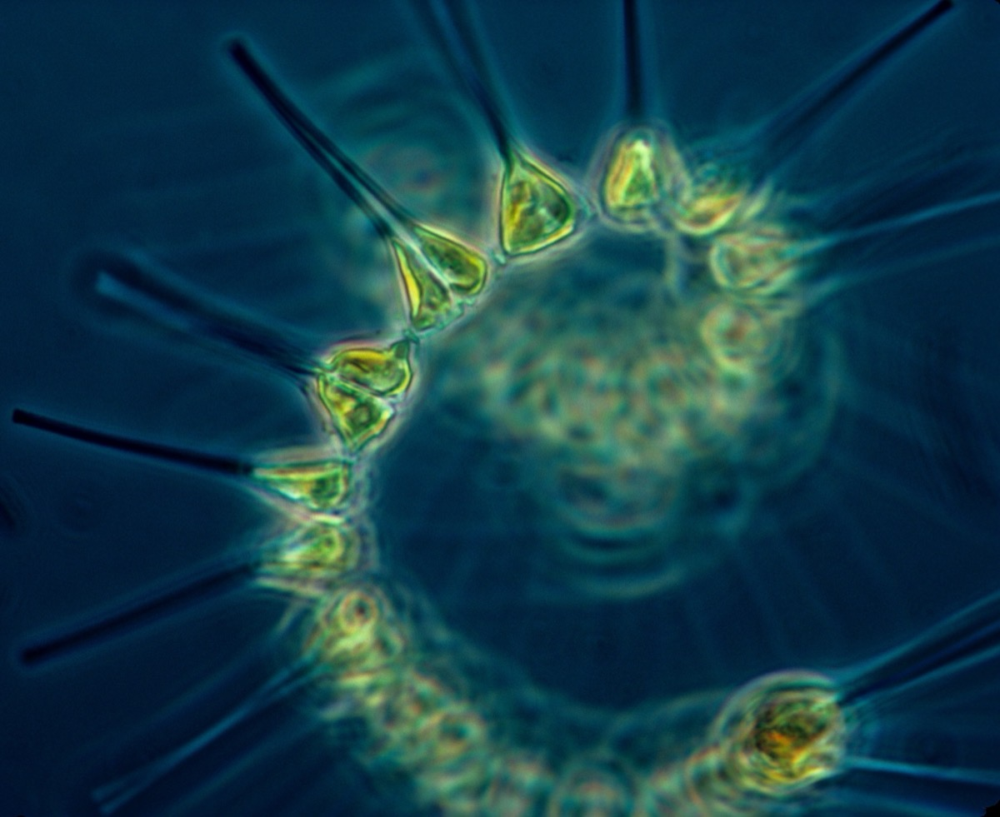

Executive Summary
실제로 유전자를 knockout하거나 A/B 테스트를 돌리지 않고, 이미 쌓여 있는 시계열만 들여다보고서 “한쪽을 건드리면 다른 쪽이 변할까”를 알 수 있을까. 얼핏 앞뒤가 안 맞는 질문 같지만, 2026년 J. R. Soc. Interface에 실린 IC² 연구는 여기에 두 개의 인과 점수로 답한다. 하나는 평소 관찰된 움직임 속에서 두 변수가 얼마나 얽혀 있는지를 재고(CIC), 다른 하나는 그중 한쪽을 살짝 흔들었을 때 그 흔들림이 실제로 다른 쪽까지 전해지는지를 잰다(iCIC). 이 글은 그 두 점수가 무엇이고, 왜 둘을 나란히 놓고 봐야 숨은 원인까지 걸러지는지를 따라간다.
핵심은 기계 장치가 아니라 대비다. 진짜 직접 인과라면 두 점수가 함께 높지만, 눈에 보이지 않는 공통 원인 때문에 그저 같이 움직이는 관계라면 CIC는 높아도 iCIC는 힘을 잃는다. 이 어긋남 하나가 숨은 교란변수의 지문이 된다. 저자들은 플랑크톤 먹이망에서 7개의 인과 링크를 가짜 양성 없이 모두 찾아냈고, 추정한 개입 효과가 실제 효과 강도와 상관계수 0.77로 맞았다. 한 가지는 분명히 해 두자. 여기서 말하는 개입은 원하는 값을 강제로 집어넣는 do-calculus식 임의 개입이 아니라, 관찰된 궤적 안에서 가능한 아주 작은 국소 변화다.
이 프레임이 페블러스의 눈길을 끄는 이유는 실무의 오래된 벽과 겹치기 때문이다. DataClinic 진단은 늘 “상관은 뚜렷한데 이게 인과인가”라는 질문 앞에서 멈춘다. IC²는 그 질문을 “같이 움직이는가”와 “건드리면 전달되는가”라는 두 축으로 갈라 놓는다. 그리고 로봇이나 헬스케어처럼 실제 개입 한 번이 수천억 원, 혹은 사람의 안전이 걸린 도메인에서, 관찰 로그만으로 개입 효과를 근사한다는 발상은 데이터를 모으는 비용 구조 자체를 다시 그리게 만든다.
7 / 7
먹이망 인과 링크 검출
플랑크톤 군집에서 실제 링크를 모두 찾고 가짜 양성은 0개
r = 0.77
추정 개입효과 일치도
관찰로 추정한 개입 효과와 실제 효과 강도의 상관계수
AUC 0.843
Perturb-seq 실측 검증
control cell만으로 예측한 값이 실제 CRISPR 결과와 일치
$2.6B
신약 RCT 평균 비용
8.5~15년 소요. 관찰 기반 추정이 값어치를 갖는 대조점
같이 움직인다고 원인은 아니다
여름이 되면 아이스크림 판매가 오르고 물놀이 사고도 는다. 두 곡선은 놀랄 만큼 나란히 움직인다. 그렇다고 아이스크림을 끊으면 사고가 줄까. 아니다. 둘을 함께 밀어 올리는 것은 기온이라는 제3의 변수다. 데이터만 보면 아이스크림과 사고는 분명히 “같이 움직인다”. 그런데 한쪽을 실제로 건드려도 다른 쪽은 꿈쩍하지 않는다. 상관은 있는데 인과는 없는, 실무에서 가장 흔하고 가장 위험한 상황이다.
이 낡은 교훈이 다시 뾰족해지는 것은 데이터가 시간을 따라 흐를 때다. 두 변수 x와 y의 시계열이 비슷하게 출렁일 때, 우리는 세 가지 가능성 사이에서 헷갈린다. x가 정말 y를 움직이는 직접 인과일 수도 있고, x가 중간 변수를 거쳐 y에 닿는 간접 관계일 수도 있으며, 아이스크림과 사고처럼 보이지 않는 공통 원인 z가 둘을 함께 흔드는 잠재 교란일 수도 있다. 겉으로 드러난 동조만으로는 이 셋이 구별되지 않는다.
바로 어제 우리는 “LLM은 관찰을 새 이론으로 바꾸는 도약을 못 한다”는 딥마인드 연구를 다뤘다. 그 글이 인식론의 질문, 즉 없던 개념을 어떻게 발견하느냐를 물었다면, 오늘 IC²가 붙드는 것은 통계와 방법론의 질문이다. 개념은 이미 주어졌다고 치고, 관찰만으로 개입의 효과를 어떻게 추정하느냐다. 발견이 아니라 추정, 도약이 아니라 판별. 같은 “관찰의 한계”를 다루되 결이 다르다.
그동안 시계열 인과를 다뤄 온 도구들은 대체로 첫 번째 질문, “둘이 얼마나 함께 움직이나”에 대답해 왔다. 문제는 그 대답만으로는 잠재 교란을 걸러 낼 수 없다는 데 있다. 아무리 정교하게 동조의 강도를 재도, 아이스크림과 사고는 여전히 강하게 얽혀 보인다. 필요한 것은 두 번째 눈, 곧 “한쪽을 실제로 살짝 건드렸을 때 그 변화가 전해지는가”를 따로 재는 장치다. IC²의 출발점이 여기다.
CIC: 관찰 속에 남는 인과의 지문
첫 번째 점수 CIC(causal information content)의 직관은 의외로 단순하다. x가 y의 원인이라면, 시간이 흐르면서 y의 움직임 속에는 x가 과거에 어떤 상태였는지에 대한 흔적이 조금씩 새겨진다. 원인은 결과에 자기 정보를 남기기 때문이다. 그래서 y의 궤적만 보고도 x의 지난 상태를 제법 잘 되짚어 낼 수 있다면, 두 변수는 그만큼 많은 인과정보를 공유하고 있는 셈이고 CIC가 높아진다.
이 발상은 하늘에서 뚝 떨어진 것이 아니다. 1981년 수학자 타켄스는 하나의 변수를 시간 간격을 두고 여러 번 떠다가 좌표로 삼으면(이를 delay embedding, 시간지연 임베딩이라 한다) 시스템 전체의 상태 공간을 복원할 수 있음을 증명했다. 이 정리 위에서 2012년 스기하라 연구진은 CCM(convergent cross mapping)을 제안했다. y로 복원한 ‘그림자 궤적’ 위에서 x를 예측할 수 있으면 x가 y의 원인이라고 판단하는 방법이다. CIC는 이 계보를 정보량의 언어로 다듬은 것으로 볼 수 있다. ‘예측이 되는가’를 넘어 ‘정보가 얼마나 공유되는가’를 재는 쪽으로.
한 가지를 분명히 해 두면 좋다. CIC는 관찰된 dynamics만 놓고 계산하는 관찰적 점수다. 실험을 전제하지 않는다. 두 변수가 평소에 얼마나 강하게 얽혀 있는지, 그 얽힘을 한 숫자로 요약할 뿐이다. 그리고 바로 그 점이 CIC의 힘이자 한계다. 얽힘은 잘 잡아내지만, 그 얽힘이 진짜 인과에서 왔는지 아니면 숨은 z가 만든 착시인지는 CIC 혼자서는 가리지 못한다. 아이스크림과 사고의 CIC도 얼마든지 높게 나올 수 있다.
y의 움직임만으로 x의 과거 상태를 얼마나 잘 되짚어 내는가. 그 복원 정도가 공유된 인과정보, 곧 CIC다.
iCIC: 자연이 만들어 둔 작은 실험
두 번째 눈이 iCIC다. 이름 앞에 붙은 i는 interventional, 곧 개입을 뜻한다. 그런데 앞서 말했듯 IC²는 실험실에서 x를 직접 건드리지 않는다. 그렇다면 개입을 어떻게 잰다는 걸까. 여기서 이 방법의 가장 영리한 발상이 등장한다.
시계열을 delay embedding으로 펼치면 시스템의 궤적이 그리는 하나의 곡면, 즉 dynamical manifold(끌개, attractor)가 복원된다. 이 곡면 위에는 수많은 상태점이 흩어져 있고, 그중에는 거의 똑같은데 x만 아주 조금 다른 두 점이 반드시 존재하게 마련이다. 나머지 조건이 사실상 같고 x만 살짝 어긋난 두 상황. 이것은 실험실에서 “다른 건 그대로 두고 x만 조금 바꾸는” 통제된 개입과 구조가 같다. 자연이 관찰 데이터 안에 이미 만들어 둔, 아주 작은 통제 실험인 셈이다.

한 문장으로 옮기면 이렇다. “실험실에서 x를 직접 건드리는 대신, 자연스럽게 관찰된 데이터 중에서 x가 조금 달라진 매우 비슷한 상황을 찾아보자.” 그 두 점 사이의 미세한 차이를 작은 가상 개입(virtual intervention)으로 읽고, 그 개입이 이어서 y의 변화로 얼마나 전달되는지를 측정한 것이 iCIC다.
그래서 두 점수의 역할이 갈린다. CIC는 평소 dynamics에서 x와 y가 얼마나 강하게 연결되어 있는지를 본다. iCIC는 x에 작은 흔들림이 생겼을 때 그 정보가 실제로 y의 변화로 넘어가는지를 본다. 하나는 ‘평소의 동거’를, 다른 하나는 ‘건드렸을 때의 반응’을 재는 것이다. 이 둘은 겹쳐 보이지만 결코 같지 않으며, 그 차이가 다음 장의 핵심이 된다.
manifold 위에서 거의 같고 x만 조금 다른 두 점을 찾아, 그 차이를 작은 개입으로 삼아 y로의 전달을 잰다.
두 점수를 함께 읽는 법
IC²의 진짜 아이디어는 CIC도 iCIC도 아니라, 둘을 나란히 놓고 비교한다는 데 있다. 상관을 재는 도구는 이미 넘친다. 이 연구의 기여는 관찰적 연결(CIC)과 개입적 전달(iCIC)을 두 개의 독립된 축으로 떼어 놓고, 그 둘이 어긋나는 지점을 숨은 원인의 신호로 읽어 낸 것이다.
읽는 규칙은 직관적이다. 진짜로 x가 y의 직접 원인이라면 평소에도 얽혀 있고(CIC 높음) 건드리면 전달도 된다(iCIC 높음). 반대로 숨은 교란변수 z 때문에 같이 움직이는 관계라면, 관찰적 연결은 존재하므로 CIC는 어느 정도 높게 나오지만 x의 흔들림이 y로 직접 넘어가지는 않으므로 iCIC는 힘을 잃는다. 바로 이 CIC는 높은데 iCIC는 낮은 어긋남이 잠재 교란의 지문이다. 두 점수가 모두 낮으면 애초에 무관한 쌍이다.
IC²의 핵심을 한 그림으로. CIC↑·iCIC↓ 칸이 숨은 공통 원인을 잡아내는 자리다.
정보 분리기는 판단하지 않는다
그런데 CIC와 iCIC를 계산하려면 먼저 풀어야 할 문제가 하나 있다. 관찰된 데이터에는 “이 부분은 x와 y가 공유하는 정보, 저 부분은 x만의 정보”라는 꼬리표가 붙어 있지 않다. 뒤엉킨 정보를 공유 성분과 고유 성분으로 갈라 놓아야 한다. 저자들은 이 분리를 신경망에 맡긴다. 사용자에게 전해진 소개에서는 VAE로 설명되고, 논문 본문 표현으로는 정보를 직교하는 성분으로 나누는 dual decomposition 계열로 서술된다. 원문 전체가 유료 장벽 뒤에 있어 이름은 다소 유보해 두는 편이 정확하지만, 어느 쪽이든 하는 일은 같다. x와 y의 dynamics에 담긴 정보를 비선형적으로 공유/고유로 분리하는 것이다.
여기서 오해하기 쉬운 대목을 못 박아 둔다. 이 신경망이 인과를 판단하는 것이 아니다. 분리기는 재료를 손질할 뿐이고, 인과의 판단은 그렇게 손질된 정보로 계산한 CIC와 iCIC의 대조가 한다. 그래서 이 연구에서 VAE냐 dual decomposition이냐보다 상위에 있는 진짜 핵심은, 관찰정보(CIC)와 가상개입정보(iCIC)를 분리해서 비교한다는 발상 그 자체다. 도구는 바뀔 수 있어도 이 대조의 구조는 남는다.
관찰로 개입을 맞혔는가
아이디어가 그럴듯해도, 관찰만으로 개입을 맞힌다는 주장은 결국 실제 개입과 맞대어 봐야 믿을 수 있다. IC²의 검증에서 흥미로운 것은 개별 수치 하나하나가 아니라 검증의 구조다. “관찰로 추정한 것”을 “실제로 건드려 얻은 것”과 나란히 놓고 얼마나 겹치는지를 본다.
가장 신뢰도가 높은 사례는 플랑크톤 군집의 먹이망이다. IC²는 정답으로 알려진 7개의 인과 링크를 하나도 빠짐없이 검출했고, 가짜 양성은 0개였다. 게다가 관찰만으로 추정한 개입 효과의 세기가 실제 효과 강도와 상관계수 0.77로 맞아떨어졌다. 방향뿐 아니라 크기까지 어느 정도 근사한 것이다. 벤치마크로 넘어가면 기존 방법이 무너지는 지점이 IC²의 존재 이유를 드러낸다. Granger causality는 약한 결합이나 비분리 변수 여럿을 오판했고, CCM과 그 파생인 PCM은 숨은 공통 원인이 만든 가짜 인과를 구별하지 못했다. IC²는 인과 case들을 인과로, 비인과 case들을 비인과로 대체로 옳게 갈랐다. 다만 노이즈가 큰 한 사례는 놓쳤는데, 이는 뒤에서 볼 한계와 이어진다.

이 글의 중심 질문에 가장 곧게 답하는 것은 단일세포 Perturb-seq 검증이다. 저자들은 아무것도 건드리지 않은 control cell의 관찰 데이터만으로 특정 유전자를 perturbation했을 때의 효과를 예측한 뒤, 그것을 실제 CRISPR 실험 결과와 비교했다. 일치도는 AUC 0.843이었다. 관찰만으로 개입 결과를 맞힐 수 있는가라는 질문을, 습식 실험이라는 가장 단단한 잣대로 직접 확인한 것이다. 여러 방법을 종합한 판별 성능은 약 0.91 수준으로 보고되지만, 이 수치는 유료 원문을 직접 확인하지 못해 보수적으로 읽는 편이 안전하다.
| 검증 무대 | 무엇을 확인했나 | 결과 |
|---|---|---|
| 플랑크톤 먹이망 | 알려진 인과 링크 검출 + 개입효과 크기 | 7/7 검출, 가짜 양성 0, r = 0.77 |
| 비선형 벤치마크 | Granger·CCM·PCM 대비 간접·교란 구별 | 인과/비인과 대체로 정확, 노이즈 case 1건 놓침 |
| 단일세포 Perturb-seq | control cell 관찰 → CRISPR 개입 예측 | 실측 일치 AUC 0.843 |
이 성과는 갑자기 튀어나온 것이 아니라 계보의 한 지점이다. 1981년 타켄스의 상태공간 복원, 1969년 그레인저의 예측 기반 인과, 2012년 스기하라의 CCM, 그 뒤를 이은 PCM으로 이어지는 흐름이 있다. IC²의 직전 선행연구는 2024년의 IEE/IntDC(arXiv:2407.01621)로, 이미 예쁜꼬마선충(C. elegans)의 신경 연결망, 일본의 코로나19 전파망, 하루 주기 유전자 조절망 같은 실세계 문제에 적용된 실적을 쌓았다. IC²가 그 위에 새로 얹은 것이 바로 보이지 않는 공통 원인을 걸러 내는 능력이다. 계보에서 ‘새로 풀린 문제’가 무엇인지가 이렇게 분명하다.
상태공간 복원에서 출발한 동역학적 인과 추정의 계보. IC²가 더한 것은 ‘숨은 공통 원인’을 가려내는 눈이다.
무엇을 조심해야 하나
인상적인 결과일수록 한계를 또렷이 적어 두는 편이 정직하다. 가장 중요한 유보는 ‘개입’의 정의다. IC²가 재는 개입은 관찰된 manifold 안에서 가능한 작은 국소 변화이지, 시스템을 완전히 새로운 상태로 강제로 밀어 넣는 do-calculus식 임의 개입이 아니다. 다시 말해 “이 변수를 지금까지 본 적 없는 값으로 확 바꾸면 무슨 일이 벌어지나”라는 질문에는 답하지 못한다. 데이터가 한 번도 가 보지 않은 영역이기 때문이다. “관찰이 do(x)를 대체한다”는 식의 과장은 이 방법이 감당할 수 있는 범위를 넘는다.
두 번째는 데이터 조건이다. manifold를 복원하려면 충분히 길고 통계적 성질이 시간에 따라 크게 변하지 않는(정상적, stationary) 시계열이 필요하다. 데이터가 짧거나 노이즈가 크면 복원 자체가 흔들려 두 점수 모두 신뢰를 잃는다. 앞서 벤치마크에서 노이즈가 큰 한 사례를 놓친 것이 그 증거다. 이런 data hungriness와 정상성 가정은 현장 데이터에 그대로 적용하기 전에 반드시 점검해야 할 조건이다.
그럼에도 이 연구가 남기는 렌즈는 값지다. “관찰했을 때 같이 움직이는가”와 “한쪽을 조금 바꿨을 때 그 변화가 전달되는가”를 나눠서 보자는 발상은 단순하면서도 강하다. 그리고 이 발상이 값어치를 갖는 이유는, 진짜 개입 실험이 종종 감당하기 힘들 만큼 비싸기 때문이다. 신약 하나를 무작위 대조 임상(RCT)까지 끌고 가는 데 평균 26억 달러와 8.5~15년이 든다(이 추정에는 방법론 논쟁이 있어, 시민단체 MSF는 훨씬 낮게 잡는다). 유전자 기능을 훑는 genome-wide CRISPR 스크린은 회당 5만~10만 달러 규모이고, 압축형 Perturb-seq 기법은 그 비용을 10~20배까지 낮췄다. 관찰 로그만으로 개입 효과를 근사할 수 있다면, 이 비용 구조의 어느 지점을 덜어 낼 여지가 생긴다.

정리하면 이렇다. IC²는 만능 열쇠가 아니다. 하지만 관찰과 개입을 분리해서 본다는 렌즈는, 데이터 품질을 ‘양과 정합성’에서 ‘인과적 타당성’으로 밀고 나가는 데이터 품질의 다음 질문을 정확히 건드린다. 그 지점이 페블러스가 이 연구를 눈여겨보는 이유로 이어진다.
페블러스가 주목하는 이유
언론이 이런 논문을 다루면 대개 ‘방법 요약’에서 멈춘다. 우리가 이 연구를 붙드는 이유는 그 결론이 향하는 방향이 우리가 오래 씨름해 온 문제와 겹치기 때문이다. 겹치는 지점은 네 곳이다.
상관과 인과를 두 축으로 가른다
DataClinic 진단이 늘 부딪히는 벽은 “상관은 뚜렷한데 이게 인과인가”다. IC²의 CIC/iCIC 분리는 이 막연한 질문을 “같이 움직이는가”와 “건드리면 전달되는가”라는 두 개의 구체적 점수로 갈라 놓는다. 데이터 품질을 양과 정합성에서 인과적 타당성으로 확장하려는 AI-Ready Data 방법론의 자연스러운 다음 단계다.
가짜 인과는 데이터에 숨어 모델을 굳힌다
학습 데이터가 아무리 많아도, 교란된 상관을 그대로 학습하면 모델은 ‘가짜 인과’를 내부 표현으로 굳히고 배포 이후 무너진다. iCIC처럼 “가상 개입이 실제로 전달되는가”를 데이터 단계에서 걸러 내는 관점은, 데이터 품질을 인과적 타당성으로 넓히는 구체적 논거가 된다. 벤치마크에서 CCM·PCM이 놓친 잠재 교란이 바로 데이터에 숨어 모델을 오도하는 그 패턴이다.
개입이 비싼 도메인의 비용 구조를 바꾼다
로봇 학습, 헬스케어, 정책처럼 실제 개입(정책 변경·CRISPR·RCT)이 비싸거나 비윤리적인 도메인에서, 관찰 로그만으로 개입 효과를 근사할 수 있다면 데이터 수집 비용 구조 자체가 바뀐다. 앞서 본 RCT 26억 달러와 CRISPR 스크린 5만~10만 달러라는 대조가 “관찰 기반 추정이 왜 값어치 있는가”를 정량으로 보여 준다. 페블러스가 로봇 데이터의 폐루프 공백과 학습 데이터 피라미드에서 지적해 온 개입 비용 문제의 한 가지 완화 경로이기도 하다.
계보로 읽으면 신뢰가 선다
IC²는 IEE(2024)에서 IC²(2026)로 이어지는 계보의 최신 지점이고, 그 계보는 예쁜꼬마선충 신경망과 코로나19 전파망, 하루 주기 유전자망 같은 실세계 검증을 이미 통과했다. 이 흐름을 데이터 품질 실무의 언어로 옮기는 것이 페블러스가 취하는 각도다. 다만 여기서 한 걸음 더 나아가 “그러므로 우리”로 점프하지는 않겠다. 이 글은 관찰과 개입을 분리해 본다는 렌즈가 데이터 품질의 다음 질문을 건드린다는 지점까지만, 담담히 따라간다.
참고문헌
논문·학술
- 1.IC²: interventional dynamical causality under latent confounders. J. R. Soc. Interface 23(240):20251289 (2026). royalsocietypublishing.org (원문 PDF 유료. 본문 수치 일부는 검색 인덱스 스니펫 교차 확인에 근거)
- 2.IntDC / IEE — Interventional Embedding for dynamical causality. arXiv:2407.01621 (2024). IC²의 직접 선행연구. arxiv.org/abs/2407.01621
- 3.Sugihara, G. et al. (2012). Detecting Causality in Complex Ecosystems. Science 338:496–500. Convergent Cross Mapping(CCM) 원전. science.org
- 4.Takens, F. (1981). Detecting strange attractors in turbulence. Lecture Notes in Mathematics 898. 상태공간 복원 이론 배경.
- 5.Granger, C. W. J. (1969). Investigating Causal Relations by Econometric Models and Cross-spectral Methods. Econometrica 37(3). Granger causality 원전(비교 기준선).
- 6.Replogle, J. M. et al. (2022). Mapping information-rich genotype-phenotype landscapes with genome-scale Perturb-seq. Cell 185(14). cell.com
정책·통계
- 7.DiMasi, J. A. et al. / Tufts CSDD (2016). Innovation in the pharmaceutical industry: New estimates of R&D costs. Journal of Health Economics 47. 신약개발 $2.6B 추정(방법론 논쟁 병존, MSF는 훨씬 낮게 추정).
- 8.compressed Perturb-seq. Nature Biotechnology (2023) — 스크린 비용 10~20배 절감. nature.com
페블러스 인접 글
- 9.페블러스 (2026). 추론은 하지만 발견은 못 한다 — LLM의 귀추적 도약 한계. blog.pebblous.ai (인식론적 발견 vs 통계적 개입 추정의 각도 구분).
- 10.페블러스 (2026). 로봇 데이터의 폐루프 공백 · 학습 데이터 피라미드 · NVIDIA Virtual Cell Challenge 관련 리포트 — 개입 비용과 관찰 기반 예측 맥락.
IC² 원문은 유료 장벽 뒤에 있어, 본문의 정량 수치 일부(종합 판별 AUC 등)는 검색 인덱스 스니펫과 2차 출처의 교차 확인에 근거했고 보수적으로 표기했다. 먹이망 7/7·상관계수 0.77과 Perturb-seq AUC 0.843은 원문 문장 인용이 확보된 수치다. 정보 분리기의 정확한 아키텍처명(VAE 대 dual decomposition)은 원문 Methods 확보 시 확정한다.